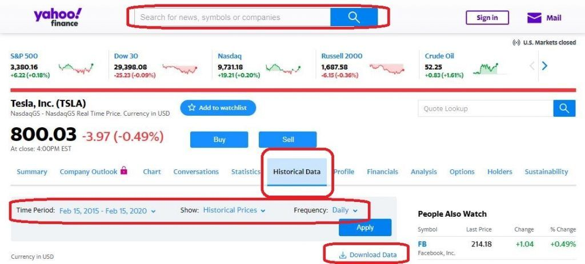
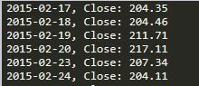
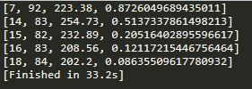
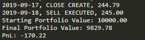
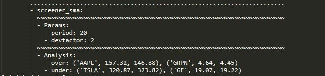
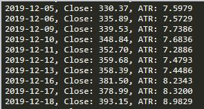

Backtrader shows you how your strategy might perform in the market by testing it against past price data.
The library’s most basic functionality is to iterate through historical data and to simulate the execution of trades based on signals given by your strategy.
It extends on this functionality in many ways. A Backtrader “analyzer” can be added to provide useful statistics. We will show an example of this using the commonly used Sharpe Ratio in a optimization test later in this tutorial.
On the subject of optimization, it’s clear a lot of thought has been put in to speeding up the testing of strategies with different parameters. The built in optimization module uses multiprocessing, fully utilizing your multiple CPU cores to speed up the process.
Lastly, Backtrader utilizes the well-known matplotlib library to create charts at the end of your backtest, if desired.
How to install Backtrader
The easiest way to install Backtrader is by command line. Simply type in pip install backtrader
If you plan to use the charting functionality, you should have matplotlib installed. The minimum version requirement for matplotlib is 1.4.1.
You can confirm it is installed on your system by typing in pip list from the command line to show installed Python packages.
If you need to install it, you can do so either via pip install backtrader[plotting] or pip install matplotlib.
Alternatively, you can run Backtrader from source. Download the zip file from the Backtrader GitHub page and unzip the backtrader directory inside your project file.
How to configure the basic Backtrader setup
import backtrader as bt
class MyStrategy(bt.Strategy):
def next(self):
pass #Do something
#Instantiate Cerebro engine
cerebro = bt.Cerebro()
#Add strategy to Cerebro
cerebro.addstrategy(MyStrategy)
#Run Cerebro Engine
cerebro.run()
We will go into the strategy class in more detail in the examples that follow. This is where all the logic goes in determining and executing your trade signals. It is also where indicators can be created or called, and where you can determine what get’s logged or printed to screen.
The cerebro engine is the core of Backtrader. This is the main class and we will add our data and strategies to it before eventually calling the cerebro.run() command.
How to get data and import it into Backtrader
There are several ways to get data. If you’re already signed up with a broker, you might have API access to grab historical data.
Alternatively, there are many third-party API’s available that allow you to download historical data from within your Python console.
For our example, we will download data in CSV format directly from the Yahoo Finance website.

Simply navigate to the Yahoo Finance website and enter in the ticker or company name for the data you’re looking for. Then, click on the Historical Data tab, select your Time Period, and click on Apply. There will be a Download Data link which will save the CSV file to your hard drive.
It’s a good idea to copy the CSV file over to your project directory. Otherwise, you will have to specify a full pathname when adding your data to cerebro.
We can add our data to Backtrader by using the built-in feeds template specifically for Yahoo Finance. The template will take care of any formatting required for Backtrader to properly read the data.
data = bt.feeds.YahooFinanceCSVData(dataname='TSLA.csv') cerebro.adddata(data)
In the above example, we’ve assigned the CSV dataset to a variable named data. The next step is to add this to cerebro.
Adding data can be done at any point between instantiating cerebro and calling the cerebro.run() command. There are several additional parameters we can specify when loading our data. We will explore this further in our next example.
How to print or log data using the strategy class in Backtrader
To get a bit more familiar with the Strategy class in Backtrader, we will create a simple script that prints the closing prices for our dataset. The Strategy class is where we will be spending most of our time within Backtrader.
The first thing we will do is create a new class called PrintClose which inherits the Backtrader Strategy class.
import backtrader as bt
class PrintClose(bt.Strategy):
def __init__(self):
#Keep a reference to the "close" line in the data[0] dataseries
self.dataclose = self.datas[0].close
In the __init__ function above, we’ve created a variable called dataclose to make it easier to refer to the closing price later on. You will notice that the closing price is stored in datas[0].close. We can just as easily access the open price by referencing datas[0].open. If you’re using multiple data feeds, you can access your second feed by referencing datas[1].close, but more on that later.
An important feature of Backtrader is accessing historical data which we can now do via the dataclose variable. As Backtrader iterates through historical data, this variable will get updated with the latest price from dataclose[0]. We can also look back to the prior data points by accessing the negative index of dataclose. Here is an example.
if dataclose[0] > dataclose [-1]: pass # do something
The above code checks to see if the most recent close is larger than the prior close. We can just as easily access the second last closing price by changing the index like this: dataclose[-2]
The next step is to create a logging function.
def log(self, txt, dt=None):
dt = dt or self.datas[0].datetime.date(0)
print(f'{dt.isoformat()} {txt}') #Print date and close
The log function allows us to pass in data via the txt variable that we want to output to the screen. It will attempt to grab datetime values from the most recent data point,if available, and log it to the screen.
Now that our printing/logging function has been defined, we will overwrite the next function. This is the most important part of the strategy class as most of our code will get executed here. This part gets called every time Backtrader iterates over the next new data point.
def next(self):
self.log('Close: ', self.dataclose[0])
All we will do for now is log the closing price.
This is what our complete script looks like at this point:
import backtrader as bt
class PrintClose(bt.Strategy):
def __init__(self):
#Keep a reference to the "close" line in the data[0] dataseries
self.dataclose = self.datas[0].close
def log(self, txt, dt=None):
dt = dt or self.datas[0].datetime.date(0)
print(f'{dt.isoformat()} {txt}') #Print date and close
def next(self):
self.log('Close: ', self.dataclose[0])
#Instantiate Cerebro engine
cerebro = bt.Cerebro()
#Add data feed to Cerebro
data = bt.feeds.YahooFinanceCSVData(dataname='TSLA.csv')
cerebro.adddata(data)
#Add strategy to Cerebro
cerebro.addstrategy(PrintClose)
#Run Cerebro Engine
cerebro.run()
And this is what your output should look like:

From this point on, the structure of our script will mostly remain the same and we will write the bulk of our strategies under the next function of the Strategy class.
How to run a backtest using Backtrader
We’ve installed Backtrader, downloaded some historical data, and written our basic script. The next step is to backtest a strategy.
We will test out a moving average crossover strategy. Essentially, it involves monitoring two moving averages and taking a trade when one crosses the other.
The moving average crossover strategy is to trading what the Hello World script is to programming. Neither will likely ever be used in the real world and are mostly used for illustrative purposes. In other words, we don’t expect the strategy to be a profitable one.
There are a few things we will do before diving into the strategy. First, we will separate our strategy into its own file. Throughout this tutorial, we will go over several examples and separating out the strategies from the main script will keep the code in a nice clean format.
The main script, which will have everything cerebro related, will only have minor changes throughout the tutorial while most of the work will be done in the strategies script.
The strategies script will be appropriately named strategies.py.
import backtrader as bt
class PrintClose(bt.Strategy):
def __init__(self):
#Keep a reference to the "close" line in the data[0] dataseries
self.dataclose = self.datas[0].close
def log(self, txt, dt=None):
dt = dt or self.datas[0].datetime.date(0)
print(f'{dt.isoformat()} {txt}') #Print date and close
def next(self):
self.log('Close: ', self.dataclose[0])
We also have to separate our data into two parts. This way, we can test our strategy on the first part, run some optimization, and then see how it performs with our optimized parameters on the second set of data.
If you’ve heard the terms in-sample data, or out-of-sample data, this is what it is referring to. Out-of-sample data is simply data set aside for testing after optimization.
There are a lot of benefits to testing and optimizing this way, take a look at What is a Walk-Forward Optimization and How to Run It? if you’d like to get a more thorough understanding of the methodology.
To divide the data, we set a from date and to date when loading our data. Don’t forget to import the DateTime module for this part.
Here is our updated main script which will be called btmain.py:
import datetime
import backtrader as bt
from strategies import *
# Instantiate Cerebro engine
cerebro = bt.Cerebro()
# Set data parameters and add to Cerebro
data = bt.feeds.YahooFinanceCSVData(
dataname='TSLA.csv',
fromdate=datetime.datetime(2016, 1, 1),
todate=datetime.datetime(2017, 12, 25),
)
# settings for out-of-sample data
# fromdate=datetime.datetime(2018, 1, 1),
# todate=datetime.datetime(2019, 12, 25))
cerebro.adddata(data)
# Add strategy to Cerebro
cerebro.addstrategy(AverageTrueRange)
# Default position size
cerebro.addsizer(bt.sizers.SizerFix, stake=3)
if __name__ == '__main__':
# Run Cerebro Engine
start_portfolio_value = cerebro.broker.getvalue()
cerebro.run()
end_portfolio_value = cerebro.broker.getvalue()
pnl = end_portfolio_value - start_portfolio_value
print(f'Starting Portfolio Value: {start_portfolio_value:2f}')
print(f'Final Portfolio Value: {end_portfolio_value:2f}')
print(f'PnL: {pnl:.2f}')
We have included from strategy import * which will make it easier to call new strategies from the main script as we create them. Also included towards the end of the script are some details regarding portfolio values and our default position size, which has been set to 3 shares.
The command cerebro.broker.getvalue() allows you to obtain the value of the portfolio at any time. We grab the starting value by calling it before running cerebro and then call it once again after to get the ending portfolio value. We can see our profit or loss by subtracting the end value from the starting value.
Let’s get started on our strategy!
class MAcrossover(bt.Strategy):
# Moving average parameters
params = (('pfast',20),('pslow',50),)
def log(self, txt, dt=None):
dt = dt or self.datas[0].datetime.date(0)
print(f'{dt.isoformat()} {txt}') # Comment this line when running optimization
def __init__(self):
self.dataclose = self.datas[0].close
# Order variable will contain ongoing order details/status
self.order = None
# Instantiate moving averages
self.slow_sma = bt.indicators.MovingAverageSimple(self.datas[0], period=self.params.pslow)
self.fast_sma = bt.indicators.MovingAverageSimple(self.datas[0], period=self.params.pfast)
In the code above, we’ve created a new class called MAcrossover which inherits from the Backtrader Strategy class.
We’ve set some parameters for our moving average rather than hard coding them. This will make it easier to optimize the strategy later on.
There are a few new items under the __init__ function. We’ve created an order variable which will store ongoing order details and the order status. This way we will know if we are currently in a trade or if an order is pending.
One thing to note about Backtrader is that when it receives a buy or sell signal, we can instruct it to create an order. However, that order won’t be executed until the next bar is called, at whatever price that may be.
We’ve also created two moving averages by utilizing indicators built into Backtrader. The benefit of using built-in indicators is that Backtrader won’t start looking for orders until this data is made available.
To clarify, the larger of the two moving averages uses an average of the last 50 closing prices. That means the first 50 data points will have a NaN moving average value. Backtrader knows not to look for orders until we have valid moving average data.
The next item we will overwrite is the notify_order function. This is where everything related to trade orders gets processed.
def notify_order(self, order):
if order.status in [order.Submitted, order.Accepted]:
# An active Buy/Sell order has been submitted/accepted - Nothing to do
return
# Check if an order has been completed
# Attention: broker could reject order if not enough cash
if order.status in [order.Completed]:
if order.isbuy():
self.log(f'BUY EXECUTED, {order.executed.price:.2f}')
elif order.issell():
self.log(f'SELL EXECUTED, {order.executed.price:.2f}')
self.bar_executed = len(self)
elif order.status in [order.Canceled, order.Margin, order.Rejected]:
self.log('Order Canceled/Margin/Rejected')
# Reset orders
self.order = None
What the above code does is allow us to log when an order gets executed, and at what price. This section will also provide notification in case an order didn’t go through.
Lastly, we have the next function which contains all of our trade logic.
def next(self):
# Check for open orders
if self.order:
return
# Check if we are in the market
if not self.position:
# We are not in the market, look for a signal to OPEN trades
#If the 20 SMA is above the 50 SMA
if self.fast_sma[0] > self.slow_sma[0] and self.fast_sma[-1] < self.slow_sma[-1]:
self.log(f'BUY CREATE {self.dataclose[0]:2f}')
# Keep track of the created order to avoid a 2nd order
self.order = self.buy()
#Otherwise if the 20 SMA is below the 50 SMA
elif self.fast_sma[0] < self.slow_sma[0] and self.fast_sma[-1] > self.slow_sma[-1]:
self.log(f'SELL CREATE {self.dataclose[0]:2f}')
# Keep track of the created order to avoid a 2nd order
self.order = self.sell()
else:
# We are already in the market, look for a signal to CLOSE trades
if len(self) >= (self.bar_executed + 5):
self.log(f'CLOSE CREATE {self.dataclose[0]:2f}')
self.order = self.close()
We first check for an active order in which case we don’t want to do anything. For this strategy, we only want to be in one position at a time.
If we’re not in the market, we can start looking for a moving average crossover. One thing to be mindful of in this strategy is that our signal comes from the cross of one moving average over another.
To satisfy that requirement, we check to see if the 20 moving average was below the 50 moving average on the last candle but is above it on the current candle or vice versa. This confirms a cross has taken place. Otherwise, we would be constantly getting a signal.
Finally, we have our else statement which gets executed if we are already in the market. For the exit strategy, we will simply exit five bars after entering the trade.
On running the code, the script will output all of our trades and print a final PnL at the end. In this case, we had a $79 profit.
One thing to keep in mind when testing strategies is that the script can end with an open trade in the system. One way to check if there are any open trades is to ensure ‘CLOSE CREATE’ is the second last line output before the portfolio values are printed. Otherwise, an open trade will likely skew your PnL results.
How to use the built-in crossover indicator
In our moving average cross over example, we coded the logic involved in determining if the two moving averages were crossing. Backtrader has developed an indicator that can determine this which can make things a bit easier.
To use the built-in indicator, instantiate it in the __init__ function as follows: self.crossover = bt.indicators.CrossOver(self.slow_sma, self.fast_sma)
Then all you need to do is check the indicator is providing a signal as follows
if self.crossover > 0: # Fast ma crosses above slow ma
pass # Signal for buy order
elif self.crossover < 0: # Fast ma crosses below slow ma
pass # Signal for sell order
How to run optimization in Backtrader
Our next step is to try and see if we can increase our profits by changing some of the moving average parameters.
In the Strategy, we will comment out the print statement in the log function. Optimizing involves several backtests with various parameters and we don’t need to log and go through every trade that takes place.
Instead, we will judge the strategy performance based on the Sharpe Ratio.
There are a number of changes to the main script file to run the optimization. Here is the code for the updated main script:
import datetime
import backtrader as bt
from strategies import *
cerebro = bt.Cerebro(optreturn=False)
#Set data parameters and add to Cerebro
data = bt.feeds.YahooFinanceCSVData(
dataname='TSLA.csv',
fromdate=datetime.datetime(2016, 1, 1),
todate=datetime.datetime(2017, 12, 25))
#settings for out-of-sample data
#fromdate=datetime.datetime(2018, 1, 1),
#todate=datetime.datetime(2019, 12, 25))
cerebro.adddata(data)
#Add strategy to Cerebro
cerebro.addanalyzer(bt.analyzers.SharpeRatio, _name='sharpe_ratio')
cerebro.optstrategy(MAcrossover, pfast=range(5, 20), pslow=range(50, 100))
#Default position size
cerebro.addsizer(bt.sizers.SizerFix, stake=3)
if __name__ == '__main__':
optimized_runs = cerebro.run()
final_results_list = []
for run in optimized_runs:
for strategy in run:
PnL = round(strategy.broker.get_value() - 10000,2)
sharpe = strategy.analyzers.sharpe_ratio.get_analysis()
final_results_list.append([strategy.params.pfast, strategy.params.pslow, PnL, sharpe['sharperatio']])
sort_by_sharpe = sorted(final_results_list, key=lambda x: x[3], reverse=True)
for line in sort_by_sharpe[:5]:
print(line)
Let’s run through some of the major changes. When instantiating cerebro, the optreturn=False parameter was added in. Cerebro removes some data output when running optimization to improve speed. However, we require this data, hence the additional parameter.
cerebro.addstrategy was removed and replaced with cerebro.optstrategy. We’ve also added additional parameters that specify a range of values to optimize the moving averages for. Further, an analyzer was added which will calculate the Sharpe Ratio for our results.
You may have noticed that we added an if __name__ == '__main__': block. In our testing, we ran into an error without it in place.
The optimized results are being stored in the variable optimized_runs in the form of a list of lists. The bottom section of the code iterates through the lists to grab the values that we need and appends it to a newly created list.
The last three lines of the code sorts the list and prints out the top five values. This is what our results looked like:

It looks like we have a clear winner. A period of 7 for the fast moving average and a period of 92 for the slow moving average produces a notably higher result for the Sharpe Ratio.
Now it’s time to run some backtests on the out-of-sample data. All it takes is a simple change to the data parameters.
fromdate=date.datetime(2018. 1. 1),
todate=datetime.datetime(2019, 12, 25)
Our backtest shows a loss of $63.42 with the same settings we used in our original test, but on the out-of-sample data. Here is the result after changing the moving average settings to the optimized parameters.

A loss of $170.22, even greater than our original settings although this was expected as a few things are impacting our figures.
First, the moving average cross over is an unsophisticated strategy that was expected to produce a loss. The only surprise here was that it produced a profit in our first run.
Second, this is a great example of overfitting. This is a new terminology and the following is what it means. Taken from Investopedia:
Overfitting
Overfitting is a modeling error that occurs when a function is too closely fit to a limited set of data points. Overfitting the model generally takes the form of making an overly complex model to explain idiosyncrasies in the data under study.
In reality, the data often studied has some degree of error or random noise within it. Thus, attempting to make the model conform too closely to slightly inaccurate data can infect the model with substantial errors and reduce its predictive power.
How to build a stock screener in Backtrader
Screeners are commonly used to filter out stocks based on certain parameters. There aren’t a lot of easy ways to look back to a certain date and see what results a stock screener might have spit out. Fortunately, Backtrader offers exactly this.
We will test out this functionality by building a screener that filters out stocks that are trading two standard deviations below the average price over the prior 20 days.
We will start by creating a subclass of the Backtrader Analyzer class which will form the ‘screener’ component of our strategy.
class Screener_SMA(bt.Analyzer):
params = (('period',20), ('devfactor',2),)
def start(self):
self.bband = {data: bt.indicators.BollingerBands(data,period=self.params.period, devfactor=self.params.devfactor)for data in self.datas}
def stop(self):
self.rets['over'] = list()
self.rets['under'] = list()
for data, band in self.bband.items():
node = data._name, data.close[0], round(band.lines.bot[0], 2)
if data > band.lines.bot:
self.rets['over'].append(node)
else:
self.rets['under'].append(node
Under the start function, you’ll notice that we are using Bollinger bands to determine the value for two standard deviations. The syntax is a bit different from prior examples as several datasets are used in a screener.
The stop function is where a bulk of our code falls. We iterate through our Bollinger band items for all of our datasets to filter out the ones that are trading below the lower band.
The stocks that qualify then get appended to a list. The analyzer class has a built-in dictionary with the variable name rets. We will use this dictionary to store our lists.
There isn’t a lot of code required in our main script, but it is quite different from prior examples. Since we are adding several datasets, we’ve created a list of all the tickers that we want to scan. We then iterate through the list to add the corresponding CSV files to cerebro.
import datetime
import backtrader as bt
from strategies import *
#Instantiate Cerebro engine
cerebro = bt.Cerebro()
#Add data to Cerebro
instruments = ['TSLA', 'AAPL', 'GE', 'GRPN']
for ticker in instruments:
data = bt.feeds.YahooFinanceCSVData(dataname='{}.csv'.format(ticker),fromdate=datetime.datetime(2016, 1, 1),todate=datetime.datetime(2017, 10, 30))
cerebro.adddata(data)
#Add analyzer for screener
cerebro.addanalyzer(Screener_SMA)
if __name__ == '__main__':
#run cerebro Engine
cerebro.run(runonce=False, stdstats=False, writer=True)
Next, we add our newly created screener class to Cerebro as an analyzer.
Finally, we call the cerebro.run command with a few additional parameters.
The writer=True parameter calls the built-in writer functionality to display the ouput. stdstats=False removes some of the standard output (more on this later). And lastly, runonce=False ensures that data remains synchronized.
Here are our results:

We can see that TSLA and GE traded at least two standard deviations below their average close price over the prior 20 days on October 30, 2017.
How to code an indicator in Backtrader
There are three ways to code an indicator in Backtrader. You can code one from scratch, utilize a built-in indicator, or use a third-party library.
If you don’t plan to use the live trading functionality of Backtrader, you might want to code your indicator yourself.
Here is an example of an indicator we created:
range_total = 0
for i in range(-13, 1):
true_range = self.datahigh[i] - self.datalow[i]
range_total += true_range
ATR = range_total / 14
The above code calculates the Average True Range (ATR). Its aim is to give an estimate of how much an instrument will typically fluctuate in a given period
It does this by iterating through the last 14 data points which can be done in Backtrader by using a negative index. We take the high and subtract the low for each period, and then average it out.
The code can then be placed within the next function of our strategy class. We can also add a simple log function to log the indicator to the screen like this:
self.log(f'Close: {self.dataclose[0]:.2f} ATR: {ATR:.4f}')
Here is the complete startegy code:
class AverageTrueRange(bt.Strategy):
def log(self, txt, dt=None):
dt = dt or self.datas[0].datetime.date(0)
print(f'{dt.isoformat()} {txt}') #Print date and close
def __init__(self):
self.dataclose = self.datas[0].close
self.datahigh = self.datas[0].high
self.datalow = self.datas[0].low
def next(self):
range_total = 0
for i in range(-13, 1):
true_range = self.datahigh[i] - self.datalow[i]
range_total += true_range
ATR = range_total / 14
self.log(f'Close: {self.dataclose[0]:.2f}, ATR: {ATR:.4f}')
Here is what the output looks like when we put it all together.
